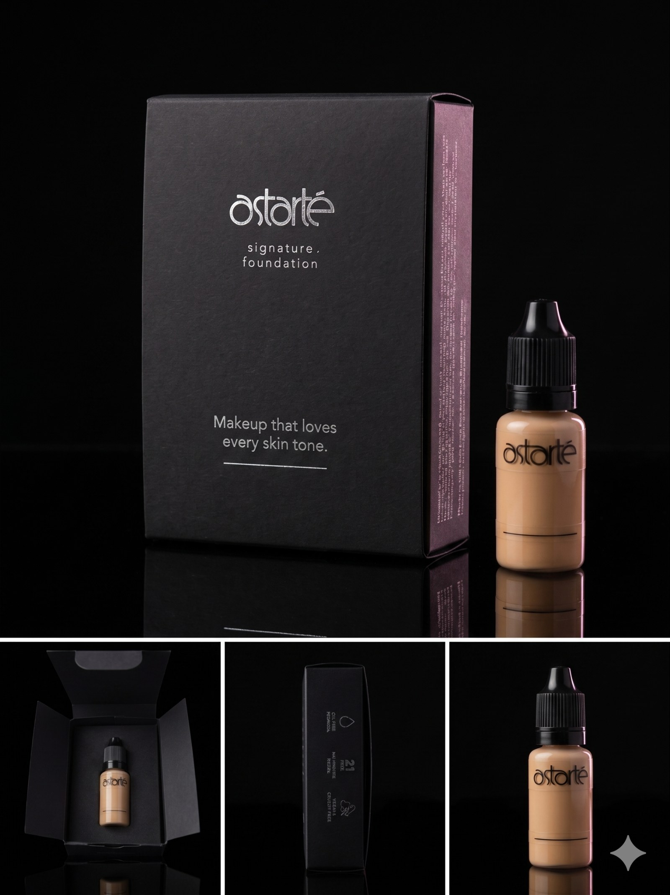
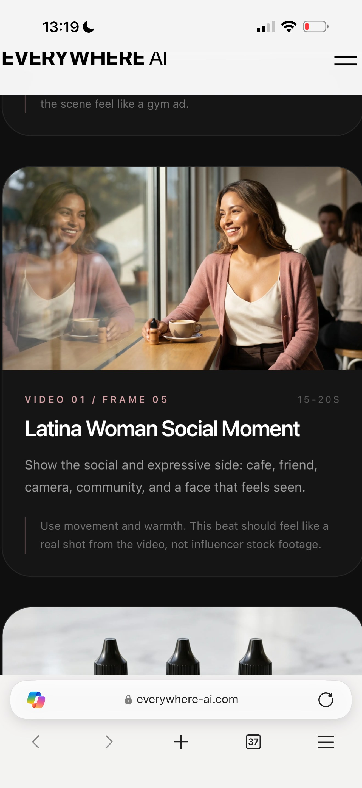

07Photography Direction
Women in life. Real settings. Aspirational restraint.
Per Mindy, May 12: "Women shining in a variety of settings, moments, hair types, and occupations — aspirational in the sense that they should show great skin, look put together, and show people looking their best."
Casting
- ·Women 30s–60s
- ·BIPOC-led casting · the full range of skin tones
- ·Variety of hair types and textures
- ·Range of professional and personal occupations
- ·Real-life moments — not styled studio portraits
Aesthetic
- ·Editorial, natural light, low-key dramatic
- ·Great skin visible — light works with skin
- ·"Looking their best" — put together, never overstyled
- ·No before/afters · no makeup-removal narrative
- ·Echo trial-box packaging — black-dominant, minimal, elevated
Photography moments — homepage three-panel reference
JT's three-panel concept: women side-by-side in angled / triangular composition. Each panel a vignette with caption.
Moment 01
A social moment.
Cafe · warm window light · with friends
Moment 02
The shade lands.
Vanity · daylight · application · happy
Moment 03
Real-life wear.
Street · cinematic · honest
Asset status
Mari Aldin photography is pending from client. Current asset library is product photography only. Homepage will use art-directed placeholder panels with explicit "photography pending" treatment until Mari's images arrive.
Phase 1 vs Phase 2 — binding
The current build is Phase 1 only: Foundation Mini (15ml, $30) and the Sampler Pack ($12). The full-size 30ml and Pressed Powder are Phase 2 products, three to four months out. Do not feature Phase 2 products in current website, trailer, or campaign deliverables. Phase 2 timing trigger is pending — date, traction milestone, or funding milestone TBD.
Product photography — the mini
The Signature Foundation Mini (15ml) is the only product physically in inventory for Phase 1. Its imagery is unfussy, dark-dominant, dropper-detail forward — echoing the trial-box packaging aesthetic. Black background, single light source, no styling tricks.

Hero
Package & bottle · brand hero
Editorial
Open package · reveal moment

PDP
Marble · water · product world
Mini imagery · usage rule
Mini bottle imagery appears on the homepage Collection card, the "Be First" section, the PDP, and the email signature. Full-size 30ml imagery is excluded from all marketing surfaces — JT mandate, May 12. Photography honors the dropper detail and the black-dominant packaging aesthetic; no overstyling.